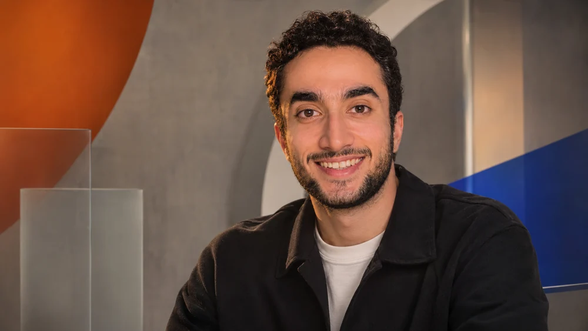

Make meaning. Visible.
Graphic Designer, Brand Identity & Art Direction
I design brand identities and digital experiences, grounded in research and an art background. Recent work includes SanMarco gelato, Yal Café, and Stancer Testing Lab, from logos and guidelines to packaging and social campaigns.
View workFocusBrand identity · Art direction · Digital experiences

My academic background in art taught me to look closely before I design. I start each brief with research, turn what I learn into ideas, and explore visual directions until one communicates clearly. Alongside my professional work, I keep developing my skills and my own perspective on design and art.
Brand identity redesign, social media design and campaigns.
Canada
Azad University, Tehran Central Branch
Amirkabir University of Technology · Withdrew